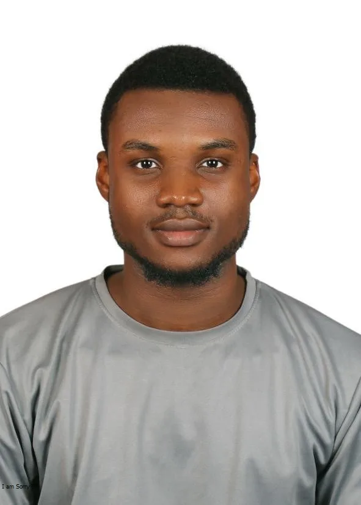

The creative foundations
Photography, logo design and 3D modelling begin to overlap. A curiosity about images becomes a wider interest in how things are made.
Explore photography ↗The person behind the work

Hello, I’m Mukhtar
I’m Muhammad Mukhtar Zikirullahi, a multidisciplinary creative technologist with a BSc in Information Technology and an advanced diploma in multimedia.
My work spans web development, brand identity, photography, digital media and immersive design. I enjoy bringing technical structure and visual thinking to the same problem.
My experience with CHRICED includes digital media production, video editing and IT support. Alongside that work, my personal and academic projects explore architecture, identity and virtual reality.
My Nigerian heritage informs my creative lens, and my curiosity keeps me exploring new tools, perspectives and ways to tell a story.
Tell me about your idea ↗My journey / 2020 — now
Each new medium added a different way of thinking. Follow the thread.
Photography, logo design and 3D modelling begin to overlap. A curiosity about images becomes a wider interest in how things are made.
Explore photography ↗Frontend training and collaborative HTML work introduce another way to turn an idea into something people can use.
See the early web project ↗Architectural modelling brings space, material and light into the work, including the Aptech institution visualisation.
Enter the 3D studio ↗BSc in Information Technology, with a final-year research project exploring immersive environments and acrophobia.
Enter the VR project ↗Personal projects connect web design, 3D modelling and experimental immersive work. The disciplines begin to inform one another.
Explore identity design ↗CHRICED media work brings video editing, production collaboration and digital support into a shared communication effort.
Explore CHRICED work ↗Youth service and YouTube channel management sit alongside a growing body of RELEC branding and website projects. The journey continues across design, development and storytelling.
Explore the recent websites ↗Have something in mind?
Tell me what you’re building, who it’s for and where you need a creative hand.
Start a conversation